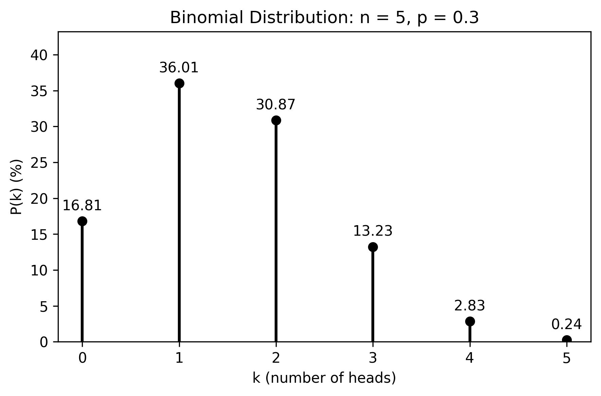

5.9. Solutions#
0.35kg of ice at 0.0\(^\circ\) C is heated until it is all melted.
What is the change in entropy of this body?
The process occurs at constant temperature \(T = 273.15\) K. The heat required to melt the ice is \(Q = mL_f\), where the latent heat of fusion is \(L_f = 334{,}000\) J kg\(^{-1}\):
\[Q = mL_f = 0.35 \times 334{,}000 = 116{,}900 \text{ J}\]Since the temperature is constant throughout:
\[\Delta S = \frac{Q}{T} = \frac{116{,}900}{273.15} = 429 \text{ J K}^{-1}\]The source of heat is a very massive body at a temperature of 25.0\(^\circ\) C. What is the change in entropy of this body?
The heat source loses the same quantity of heat \(Q = 116{,}900\) J at a constant temperature \(T = 298.15\) K. Being very massive, its temperature does not change, so:
\[\Delta S = -\frac{Q}{T} = -\frac{116{,}900}{298.15} = -392 \text{ J K}^{-1}\]What is the total change in entropy of the water and the heat source?
\[\Delta S_\mathrm{total} = \Delta S_\mathrm{ice} + \Delta S_\mathrm{source} = 429 + (-392) = +36 \text{ J K}^{-1}\]The total entropy increases, as expected for an irreversible process — heat flows spontaneously from the warm source to the colder ice.
Three moles of an ideal gas undergo a reversible isothermal compression at 20.0\(^\circ\) C. During this compression, 1850 J of work is done on the gas. What is the change of entropy of the gas?
For an isothermal process, \(\Delta U = 0\), so the first law gives \(Q = \Delta U + W = W\). Since 1850 J of work is done on the gas, the gas does work \(W = -1850\) J, and therefore releases heat:
The entropy change at constant temperature \(T = 293.15\) K is:
Two moles of an ideal gas occupy a volume \(V\). The gas expands isothermally and reversibly to a volume \(3V\).
Is the velocity distribution changed by the isothermal expansion? Explain.
No. Since the expansion is isothermal, T remains constant, so the distribution of molecular speeds is unchanged.
Using the statistical definition of entropy, calculate the change in entropy of the gas (Boltzmann).
As the number of states is related to volume, \( V^N \propto \Omega \), we can see that:
\[\begin{split} V^N \propto \Omega \\ \therefore \frac{\Omega_1}{\Omega_2} \equiv (\frac{V_2}{V_1})^N \\ = (\frac{3V_1}{V_1})^N \\ = 3^N \\ \therefore \Delta S = k_B \ln 3^N = N k_B \ln 3 \end{split}\]As the gas contains two moles, \(N = 2 N_A\):
\[ \Delta S = 2R \ln 3= 18.3 \text{ J K}^{-1}. \]Compare this to the entropy change for a free expansion between the same states (Clausius). What do you notice?
\[\Delta S = nR\ln\frac{V_f}{V_i} = 2R\ln\frac{3V}{V} = 2R\ln 3 = 18.3 \text{ J K}^{-1}\]The result is identical. This is expected — entropy is a state function, so \(\Delta S\) depends only on the initial and final states, not on whether the path is reversible or irreversible.
A 10.0 L gas tank containing 3.2 moles of ideal He gas at 20.0\(^\circ\) C is placed inside a completely evacuated, insulated bell jar of volume 35.0 L. A small hole in the tank allows the He to leak out into the jar until the gas reaches a final equilibrium state with no more leakage.
What is the change in entropy of this system due to the leaking of the gas?
This is a free expansion into an insulated container. The gas expands from the 10.0 L tank to fill the entire 35.0 L volume. Since the container is insulated and the gas is ideal, the temperature does not change, and we can use a reversible isothermal path to compute \(\Delta S\):
\[\Delta S = nR\ln\frac{V_f}{V_i} = 3.2 \times 8.314 \times \ln\!\left(\frac{35.0}{10.0}\right) = 26.6 \times 1.2526 = 33.3 \text{ J K}^{-1}\]Is the process reversible or irreversible? How do you know?
The process is irreversible. The total entropy change of the universe is positive (\(\Delta S_\mathrm{total} > 0\)), since the insulated container does not allow any entropy exchange with the surroundings. Gas expanding freely into a vacuum is a classic example of an irreversible process — it cannot spontaneously return to its initial state without external work being done.
A mug of tea has been left to cool from 90\(^\circ\) C to 18\(^\circ\) C. If there is 0.2 kg of tea in the mug, and the tea has specific heat capacity 4200 J K\(^{-1}\) kg\(^{-1}\), show that the entropy of the tea has decreased by 185.7 J K\(^{-1}\). Comment on the sign of this result.
\(\Delta S = -\int_{291}^{363} c \frac{dT}{T} = -c \ln(363/291) = -185.7\) J K\(^{-1}\). The sign is negative because the tea loses heat. However, the entropy of the surroundings increases by \(C(363 - 291)/291 = +207.8\) J K\(^{-1}\), which is larger, so the entropy of the Universe increases overall.
In a free expansion of a perfect gas (also called Joule expansion), we know \(U\) does not change, and no work is done. However, the entropy must increase because the process is irreversible. Are these statements compatible with the first law \(\text{d}U = T\text{d}S - p\text{d}V\)?
Yes: the first law always holds. In a free expansion \(\text{d}U = 0\) and \(\text{d}W = p\text{d}V = 0\), so \(T\text{d}S = p\text{d}V\), meaning both sides are zero and the equation is satisfied. The entropy increase is real but is calculated via a reversible path between the same endpoints.
Suppose that you are offered a choice of the following: a certain £10 or the chance of rolling a fair die and receiving £36 if it comes up 5 or 6, but nothing otherwise. What is the economical choice to make and why?
Since the die is fair,
\[ P(5 \text{ or } 6) = \frac{1}{6} + \frac{1}{6} = \frac{2}{6} = \frac{1}{3}. \]The expected winnings are
\[ \langle \text{£} \rangle = \frac{1}{3} \times 36 = 12. \]Since £12 \(>\) £10, option 2 is the better economic choice, unless you specifically require £10 with certainty.
You have a coin that is unfairly weighted, such that the probability of flipping it and obtaining heads is \(P(H) = 0.3\).
What is the probability that in five tosses of the coin there will be two heads?
Here \(n=5\), \(k=2\), and \(p=0.3\). Using the binomial distribution,
\[ P(k=2) = \frac{n!}{k!(n-k)!} p^k(1-p)^{n-k}. \]Hence,
\[ P(2) = \frac{5!}{2!\,3!} (0.3)^2 (0.7)^3 \approx 0.3087. \]So the probability is about 0.309, or 30.9%.
Sketch the full binomial distribution for this coin being tossed five times.
See the figure of the corresponding Binomial distribution below.
What is the mean number of heads and corresponding standard deviation if the coin is thrown 10,000 times?
For a binomial distribution,
\[ \mu = np = 10000 \times 0.3 = 3000, \]and
\[ \sigma = \sqrt{np(1-p)} = \sqrt{10000 \times 0.3 \times 0.7} \approx 45.8. \]So the mean number of heads is 3000 and the standard deviation is about 45.8.
{kind=link}

Fig. 5.8 Graph of the Binomial distribution corresponding to five flips of an unfair coin.#
A physical system has a lifetime that follows an exponential distribution, such as the lifetime of a radioactive nucleus. The probability density is
\[\begin{split} P(t) = \begin{cases} \lambda e^{-\lambda t}, & t \ge 0, \\ 0, & t < 0, \end{cases} \end{split}\]where \(\lambda\) is the decay rate constant.
Show that this probability distribution is normalised.
To confirm normalisation,
\[ \int_0^{\infty} P(t)\,dt = \int_0^{\infty} \lambda e^{-\lambda t}\,dt = \lambda \left[-\frac{1}{\lambda}e^{-\lambda t}\right]_0^{\infty} = \left[-e^{-\lambda t}\right]_0^{\infty} = 1 \]So the distribution is properly normalised.
Calculate the mean lifetime, \(\langle t \rangle\).
\[ \langle t \rangle = \int_0^{\infty} t\,P(t)\,dt = \lambda \int_0^{\infty} t e^{-\lambda t}\,dt = \frac{1}{\lambda}. \]Calculate the second moment, \(\langle t^2 \rangle\).
\[ \langle t^2 \rangle = \int_0^{\infty} t^2\,P(t)\,dt = \lambda \int_0^{\infty} t^2 e^{-\lambda t}\,dt = \frac{2}{\lambda^2}. \]Hence show that the variance is \(\sigma_t^2 = \frac{1}{\lambda^2}\), and comment on what this means physically.
The variance is
\[ \sigma_t^2 = \langle t^2 \rangle - \langle t \rangle^2 = \frac{2}{\lambda^2} - \frac{1}{\lambda^2} = \frac{1}{\lambda^2}. \]Hence
\[ \sigma_t = \frac{1}{\lambda}. \]This means the standard deviation is equal to the mean lifetime. Individual decay events are therefore highly unpredictable, even though the average behaviour of a large collection of decaying systems follows an exact exponential law.
A random variable \(x\) takes the values 1, 2, 3, 4, 5 with probabilities
Show that this probability distribution is normalised.
Adding the probabilities gives
\[ 0.1+0.2+0.4+0.2+0.1 = 1. \]So the distribution is properly normalised.
Calculate the mean value \(\langle x \rangle\).
\[ \langle x \rangle = \sum_x xP(x) = 1(0.1)+2(0.2)+3(0.4)+4(0.2)+5(0.1). \]Therefore,
\[ \langle x \rangle = 0.1+0.4+1.2+0.8+0.5 = 3.0. \]Find the mode of the distribution.
The mode is the most probable value. Since the largest probability is \(0.4\) at \(x=3\), the mode is
\[ \text{mode} = 3. \]Find the median of the distribution.
The cumulative probabilities are
\[ P(x\leq 1)=0.1,\qquad P(x\leq 2)=0.3,\qquad P(x\leq 3)=0.7. \]Since the cumulative probability first exceeds 0.5 at \(x=3\), the median is
\[ \text{median} = 3. \]A new variable \(y\) is defined by
\[ y = 2x + 1. \]Calculate the mean, mode, and median of \(y\).
Since \(\langle x \rangle = 3\),
\[ \langle y \rangle = 2\langle x\rangle + 1 = 2(3)+1 = 7. \]The mode transforms in the same way:
\[ \text{mode of } y = 2(3)+1 = 7. \]The median also transforms in the same way:
\[ \text{median of } y = 2(3)+1 = 7. \]Therefore, the mean, mode, and median of \(y\) are all equal to 7.